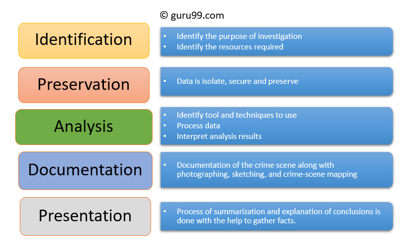

Digital Forensics entails following steps:
Let's study each in detail
It is the first step in the forensic process. The identification process mainly includes things like what evidence is present, where it is stored, and lastly, how it is stored (in which format). Electronic storage media can be personal computers, Mobile phones, PDAs, etc.
In this phase, data is isolated, secured, and preserved. It includes preventing people from using the digital device so that digital evidence is not tampered with.
In this step, investigation agents reconstruct fragments of data and draw conclusions based on evidence found. However, it might take numerous iterations of examination to support a specific crime theory.
In this process, a record of all the visible data must be created. It helps in recreating the crime scene and reviewing it. It Involves proper documentation of the crime scene along with photographing, sketching, and crime-scene mapping.
n this last step, the process of summarization and explanation of conclusions is done. However, it should be written in a layperson's terms using abstracted terminologies. All abstracted terminologies should reference the specific details.
